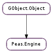

| static | get_default() |
| static | new() |
| add_search_path(module_dir, data_dir) | |
| create_extension(info, extension_type, parameters) | |
| enable_loader(loader_id) | |
| garbage_collect() | |
| get_loaded_plugins() | |
| get_plugin_info(plugin_name) | |
| get_plugin_list() | |
| load_plugin(info) | |
| prepend_search_path(module_dir, data_dir) | |
| provides_extension(info, extension_type) | |
| rescan_plugins() | |
| set_loaded_plugins(plugin_names) | |
| unload_plugin(info) |
| Name | Type | Flags | Description |
|---|---|---|---|
| loaded-plugins | list | r/w | The list of loaded plugins |
| plugin-list | int | r | The list of found plugins |
| Name | Parameters | Return | Description |
|---|---|---|---|
| load-plugin | Peas.PluginInfo | The load-plugin signal is emitted when a plugin is being loaded. The plugin is being loaded in the default handler. Hence, if you want to perform some action before the plugin is loaded, you should use g_signal_connect(), but if you want to perform some action *after* the plugin is loaded (the most common case), you should use g_signal_connect_after(). | |
| unload-plugin | Peas.PluginInfo | The unload-plugin signal is emitted when a plugin is being unloaded. The plugin is being unloaded in the default handler. Hence, if you want to perform some action before the plugin is unloaded (the most common case), you should use g_signal_connect(), but if you want to perform some action after the plugin is unloaded (the most common case), you should use g_signal_connect_after(). |
| Name | Type | Access |
|---|---|---|
| parent | GObject.Object | r |
Bases: GObject.Object
The Peas.Engine structure contains only private data and should only be accessed using the provided API.
| Returns: | the existing instance of Peas.Engine. |
|---|---|
| Return type: | Peas.Engine |
Return the existing instance of Peas.Engine or a subclass of it. If no Peas.Engine subclass has been instantiated yet, the first call of this function will return a new instance of Peas.Engine.
| Returns: | a new instance of Peas.Engine. |
|---|---|
| Return type: | Peas.Engine |
Return a new instance of Peas.Engine. If no default Peas.Engine has been instantiated yet, the first call of this function will set the default engine as the new instance of Peas.Engine.
| Parameters: |
|---|
This function appends a search path to the list of paths where to look for plugins.
A so-called “search path” actually consists of both a module directory (where the shared libraries or language modules lie) and a data directory (where the plugin data is).
The plugin will be able to use a correct data dir depending on where it is installed, hence allowing to keep the plugin agnostic when it comes to installation location: the same plugin can be installed either in the system path or in the user’s home directory, without taking other special care than using Peas.PluginInfo.get_data_dir () when looking for its data files.
If data_dir is None, then it is set to the same value as module_dir.
| Parameters: |
|
|---|---|
| Returns: | a new instance of Peas.Extension wrapping the extension_type instance, or None. |
| Return type: |
If the plugin identified by info implements the extension_type interface, then this function will return a new instance of this implementation, wrapped in a new Peas.Extension instance. Otherwise, it will return None.
When creating the new instance of the extension_type subtype, the provided construct properties will be passed to the extension construction handler (exactly like if you had called GObject.Object.new () yourself).
The new extension instance produced by this function will always be returned wrapped in a Peas.Extension proxy, following the current libpeas principle of never giving you the actual object (also because it might as well *not* be an actual object).
| Parameters: | loader_id (str) – The id of the loader to enable. |
|---|
Enable a loader, enables a loader for plugins. The C plugin loader is always enabled.
For instance, the following code will enable python plugin from being loaded: peas_engine_enable_loader (engine, "python");
Note: plugin loaders are shared across Peas.Engines so enabling a loader on one Peas.Engine will enable it on all Peas.Engines.
This function triggers garbage collection on all the loaders currently owned by the Peas.Engine. This can be used to force the loaders to destroy managed objects that still hold references to objects that are about to disappear.
| Returns: | A newly-allocated None-terminated array of strings. |
|---|---|
| Return type: | [str] |
Returns the list of the names of all the loaded plugins, or an array containing a single None element if there is no plugin currently loaded.
Please note that the returned array is a newly allocated one: you will need to free it using GLib.strfreev ().
| Parameters: | plugin_name (str) – A plugin name. |
|---|---|
| Returns: | the Peas.PluginInfo corresponding with a given plugin module name. |
| Return type: | Peas.PluginInfo |
Gets the Peas.PluginInfo corresponding with plugin_name, or None if plugin_name was not found.
| Returns: | a GLib.List of Peas.PluginInfo. Note that the list belongs to the engine and should not be freed. |
|---|---|
| Return type: | [Peas.PluginInfo] |
Returns the list of Peas.PluginInfo known to the engine.
| Parameters: | info (Peas.PluginInfo) – A Peas.PluginInfo. |
|---|---|
| Returns: | whether the plugin has been successfully loaded. |
| Return type: | bool |
Loads the plugin corresponding to info if it’s not currently loaded. Emits the “load-plugin” signal; loading the plugin actually occurs in the default signal handler.
| Parameters: |
|---|
This function prepends a search path to the list of paths where to look for plugins.
See Also: Peas.Engine.add_search_path ()
| Parameters: |
|
|---|---|
| Returns: | if info provides an extension for extension_type. |
| Return type: |
Returns if info provides an extension for extension_type. If the info is not loaded than False will always be returned.
Rescan all the registered directories to find new or updated plugins.
Calling this function will make the newly installed plugin infos be loaded by the engine, so the new plugins can be used without restarting the application.
| Parameters: | plugin_names ([str] or None) – A None-terminated array of plugin names, or None. |
|---|
Sets the list of loaded plugins for engine. When this function is called, the Peas.Engine will load all the plugins whose names are in plugin_names, and ensures all other active plugins are unloaded.
If plugin_names is None, all plugins will be unloaded.
| Parameters: | info (Peas.PluginInfo) – A Peas.PluginInfo. |
|---|---|
| Returns: | whether the plugin has been successfully unloaded. |
| Return type: | bool |
Unloads the plugin corresponding to info. Emits the “unload-plugin” signal; unloading the plugin actually occurs in the default signal handler.